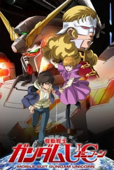
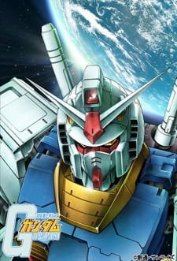

Cowboy Bebop

In 2071, humanity expands across the galaxy, causing crime and drug use in new societies. Spike Spiegel and Jet Black, along with Faye Valentine, Edward Wong Hau Pepelu Tivrusky IV, and Ein, work to catch criminals. However, their lives are disrupted by a rival's plot, and Spike must choose between life with his newfound family or revenge for his past wounds.
Code Geass

In 2010, the Holy Empire of Britannia conquered Japan, leading to significant resistance. Lelouch Lamperouge, a Britannian student, is caught in a crossfire with Area 11 rebels. With the "Power of Kings" bestowed upon him, he embarks on a dangerous journey as Zero, leading a merciless onslaught against Britannia for revenge.
Neon Genesis Evangelion

Angels, a threat to humanity, invade Tokyo-3, despite advanced military tactics. NERV, led by Gendou Ikari, employs Evangelions, giant humanoid robots, to combat them using advanced weaponry and Absolute Terror Fields, offering hope for human salvation.
Gurren Lagann

Yoko Littner, a redhead, helps Simon and Kamina, two young boys from a deep underground village, escape a surprise attack from the surface. They discover the ignition key to an ancient war artifact, Lagann, while excavating the earth. Together, they use their new weapon to defend themselves from the surface's attacks.
Mobile Suit Gundam Double Zeta

The AEUG flagship Argama is sent to Shangri-La for repairs, where 14-year-old Judau Ashta lives. They discover an escape pod containing a former Titans pilot and plan to steal a mobile suit. However, a Neo-Zeon ship arrives to defeat the Argama, causing a conflict that will take them across space and Earth.
Mobile Suit Gundam: Hathaway's Flash

In UC 105, Amuro Ray sacrifices for peace, yet the Earth Federation remains militaristic. Char Aznable's rebellion fails, but his revolutionary ideas endure. Hathaway Noa, son of a Federation commander, embodies Amuro's loyalty and Char's militant fervor as he leads the dissident group Mafty Navue Erin, resorting to violence against the Federation's tyranny.
Mobile Suit Gundam Unicorn
In Universal Century 0096, three years after Char Aznable's failed attempt to force human migration into space, life continues in Earth's colonies. One such colony, Side 4, is home to 16-year-old Banagher Links. Audrey Burne, the last descendant of a tyrannical family, steals the key to "Laplace's Box," a mysterious device with the power to shape the universe. She discovers Banagher and changes his life forever.
Mobile Suit Gundam
In the year 0079 of the Universal Century, the Principality of Zeon wages war on the Earth Federation using powerful mobile suits. When 15-year-old Amuro Ray stumbles upon the Federation's new Gundam, he's drawn into a battle across Earth and space, facing Zeon's ace pilot, Char Aznable.
Mobile Suit Gundam 0083: Stardust Memory

In UC 0083, remnants of the defeated Principality of Zeon, led by Aguille Delaz, attempt to rise again. Anavel Gato infiltrates a Federation base to steal a nuclear-equipped prototype Gundam. In response, the Earth Federation deploys the Albion carrier, with rookie pilot Kou Uraki at the helm of the remaining Gundam, to stop Gato and prevent another war.
Mobile Suit Gundam: The 08th MS Team

In UC 0079, after successfully retaking a Ukrainian city in Operation Odessa, the Earth Federation gains the upper hand in the One Year War. Ensign Shiro Amada leads the 08th MS Team to distract Zeon forces while searching for a new weapon. His resolve wavers when he reunites with Aina Sahalin, a Zeon ace pilot, forcing him to confront his loyalty to the Federation or face being branded a traitor.
Mobile Suit Gundam: The Origin

In UC 0068, after his father's assassination, Casval Rem Deikun and his sister Artesia are separated and face a chaotic future. As Casval evolves into Char Aznable, he struggles with the militarization of his father's ideals and his own desire for vengeance, ultimately becoming a legendary mobile suit pilot in an intergalactic war.
Mobile Suit Gundam: Thunderbolt

In UC 0079, during the One Year War, the Earth Federation and Principality of Zeon battle in the Thunderbolt Sector. Federation pilot Io Fleming leads an assault against Zeon ace Daryl Lorenz and his snipers. After Io acquires a prototype Gundam, Daryl faces a critical choice: sacrifice everything to defeat Io and ensure Zeon's victory or risk losing his comrades.
Mobile Suit Zeta Gundam

In UC 0087, after the One Year War, the Earth Federation's Titans are formed to hunt remaining Zeon forces, but their oppressive tactics spark the rise of the AEUG. Seventeen-year-old Kamille Bidan, living near a Titan base in Green Noa, gets into trouble for assaulting a Titan officer. When he steals a Titan prototype Gundam during an attack led by former Zeon ace Char Aznable, now AEUG pilot Quattro Bajeena, he is drawn into a dangerous conflict.